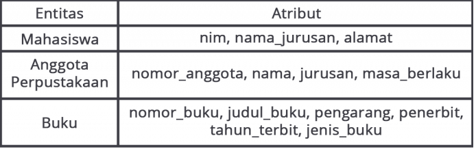
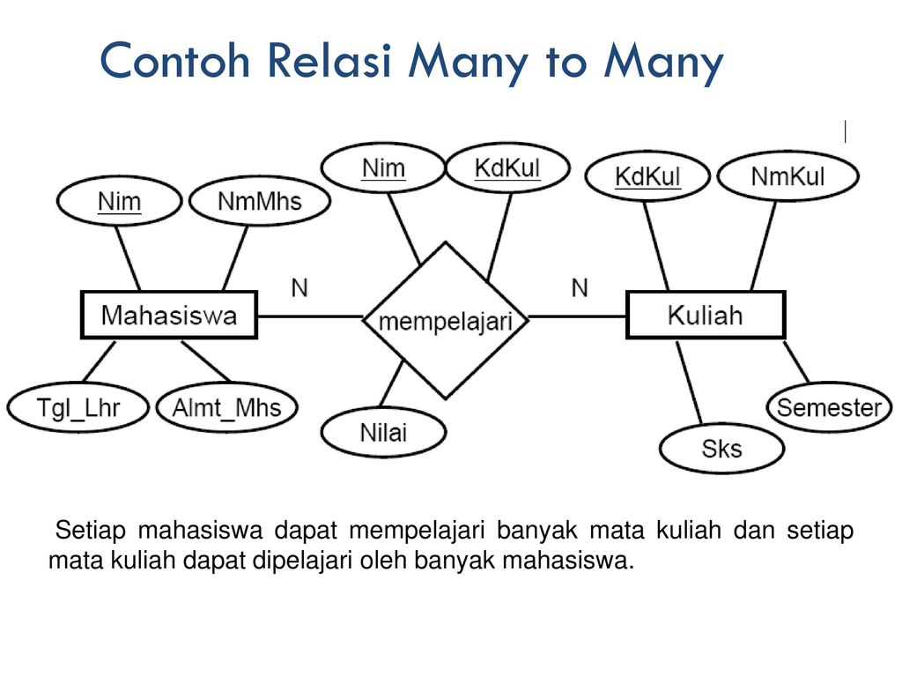

Faith Ikhtiari IF22B 22416255201201
Dosen Pengampu : Adi Rizky Pratama, M.Kom
ERD (Entity-Relationship Diagram) dalam HTML
1. Attribute
Attribute adalah data yang mendefinisikan karakteristik atau sifat dari entitas dalam basis data. Contoh atribut bisa berupa nama, nomor telepon, alamat, tanggal lahir, dll. Atribut dapat dibagi menjadi beberapa jenis, seperti atribut sederhana (misalnya, nomor telepon), atribut tergantung (misalnya, usia yang dapat dihitung dari tanggal lahir), atau atribut majemuk (misalnya, alamat yang terdiri dari beberapa komponen seperti jalan, kota, negara, dan kode pos).
2. Entity
Entitas (Entity) adalah objek dalam dunia nyata atau dalam konteks basis data yang memiliki atribut yang menggambarkan karakteristiknya. Dalam ERD, entitas biasanya digambarkan sebagai kotak dengan nama entitas di dalamnya. Contoh entitas dalam sebuah sistem informasi mungkin adalah "pelanggan," "produk," "karyawan," dan sebagainya.
3. Relationship
Relationship menggambarkan hubungan antara entitas-entitas dalam basis data. Relasi dapat memiliki tingkatan yang berbeda, seperti satu-ke-satu (one-to-one), satu-ke-banyak (one-to-many), atau banyak-ke-banyak (many-to-many). Dalam ERD, relasi biasanya digambarkan sebagai garis yang menghubungkan dua entitas dan sering memiliki label yang menjelaskan sifat hubungan tersebut, misalnya, "memiliki," "menjual," "bekerja untuk," dll. Contoh relasi dapat mencakup hubungan antara entitas "pelanggan" dan "pesanan," di mana satu pelanggan dapat memiliki banyak pesanan (satu-ke-banyak), atau hubungan antara entitas "mahasiswa" dan "mata kuliah," di mana banyak mahasiswa dapat mengambil banyak mata kuliah (banyak-ke-banyak).
4. ERD Diagram

Jadi pada contoh ER diagram di atas menjelaskan terdapat entitas, atribut, dan proses apa saja yang terjadi pada saat mahasiswa ingin meminjam buku dari perpustakaan. ER diagram tersebut dapat dijadikan gambaran untuk membuat sebuah sistem database perpustakaan. Dapat dilihat pada diagram perpustakaan di atas terdapat empat entitas di dalamnya. Keempat entitas tersebut adalah mahasiswa, anggota perpustakaan, buku, dan denda. Setiap entitas memiliki atributnya masing-masing.
Pada setiap relasi dari ER diagram di atas juga mengandung beberapa atribut yang digunakan dalam prosesnya. Seperti contohnya saat mahasiswa ingin mendaftar menjadi anggota perpustakaan maka proses yang terjadi adalah mahasiswa dimintai datanya seperti NIM, nama, jurusan, dan alamat untuk didaftarkan menjadi anggota perpustakaan.
Primary Key, Foreign Key, dan Candidate Key
Dalam konteks database dan Entity-Relationship Diagram (ERD), Primary Key, Foreign Key, dan Candidate Key adalah konsep yang penting. Berikut adalah penjelasan singkat dan contoh penerapannya:
-
Primary Key
sebuah kolom atau set kolom yang secara unik mengidentifikasi setiap baris dalam sebuah tabel. Primary Key harus unik dan tidak boleh berisi nilai NULL. Contoh Penerapan pada ERD:- Tabel Mahasiswa dengan Primary Key "NIM" (Nomor Induk Mahasiswa).
- Tabel Karyawan dengan Primary Key "ID_Karyawan".
- Tabel Produk dengan Primary Key "ID_Produk".
.jpeg)
-
Foreign Key
Foreign Key adalah kolom atau set kolom yang mengacu pada Primary Key di tabel lain. Foreign Key menciptakan hubungan antara dua tabel. Contoh Penerapan pada ERD:- Tabel Transaksi dengan Foreign Key "NIM" yang mengacu pada Primary Key "NIM" di Tabel Mahasiswa.
- Tabel Pesanan dengan Foreign Key "ID_Produk" yang mengacu pada Primary Key "ID_Produk" di Tabel Produk.
- Tabel Detail_Pembelian dengan Foreign Key "ID_Pembelian" yang mengacu pada Primary Key "ID_Pembelian" di Tabel Pembelian.

-
Candidate Key:
Definisi: Candidate Key adalah kolom atau set kolom yang dapat berfungsi sebagai Primary Key. Dengan kata lain, Candidate Key adalah kandidat untuk menjadi Primary Key. Contoh Penerapan pada ERD:- Tabel Dosen dengan Candidate Key "NIP" (Nomor Induk Pegawai).
- Tabel Pelanggan dengan Candidate Key "ID_Pelanggan" atau "Email".
- Tabel Kategori dengan Candidate Key "Kode_Kategori" atau "Nama_Kategori".

Many-to-Many Relation:
Many-to-Many Relation terjadi ketika satu entitas dalam satu tabel dapat berhubungan dengan banyak entitas dalam tabel lain, dan sebaliknya. Contohnya, seorang mahasiswa bisa terdaftar dalam banyak mata kuliah, dan setiap mata kuliah bisa diikuti oleh banyak mahasiswa.
-
Kenapa Many-to-Many tidak disarankan dalam ERD:
- Kesulitan dalam Implementasi: Many-to-Many relationships sulit diimplementasikan secara langsung dalam model relasional. Kebanyakan sistem basis data relasional tidak mendukung hubungan banyak-ke-banyak tanpa tabel perantara.
- Kompleksitas Query: Query yang melibatkan many-to-many relations bisa menjadi kompleks, sulit dipahami, dan membutuhkan waktu eksekusi yang lebih lama.
- Ketidakkonsistenan Data: Dalam model many-to-many, dapat sulit untuk memastikan konsistensi data karena banyaknya hubungan yang harus dipelihara.
-
Solusi Alternatif untuk Many-to-Many Relations:
- Perantara (Join Table): Salah satu cara untuk menangani many-to-many relations adalah dengan menggunakan tabel perantara yang menghubungkan dua entitas. Tabel perantara ini mengandung dua atau lebih Foreign Keys yang merujuk ke Primary Keys dari entitas yang terlibat.
- Relations: Dalam beberapa kasus, many-to-many dapat dipecah menjadi dua one-to-many relations dengan menggunakan tabel perantara. Sebagai contoh, misalkan kita memiliki entitas Mahasiswa dan Mata Kuliah, dan ada many-to-many relation antara keduanya. Solusi yang umum adalah membuat tabel perantara "Daftar_Matkul" dengan Foreign Keys "ID_Mahasiswa" dan "ID_Matkul".
